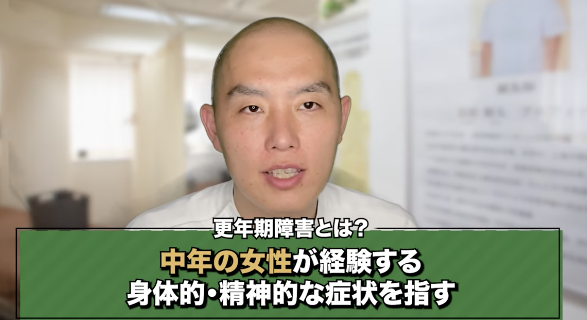
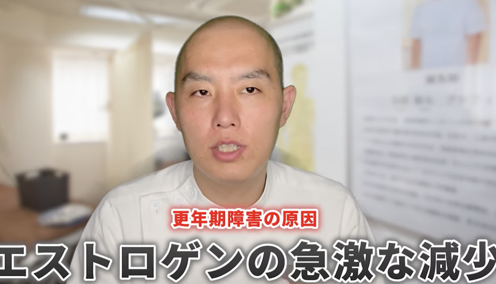
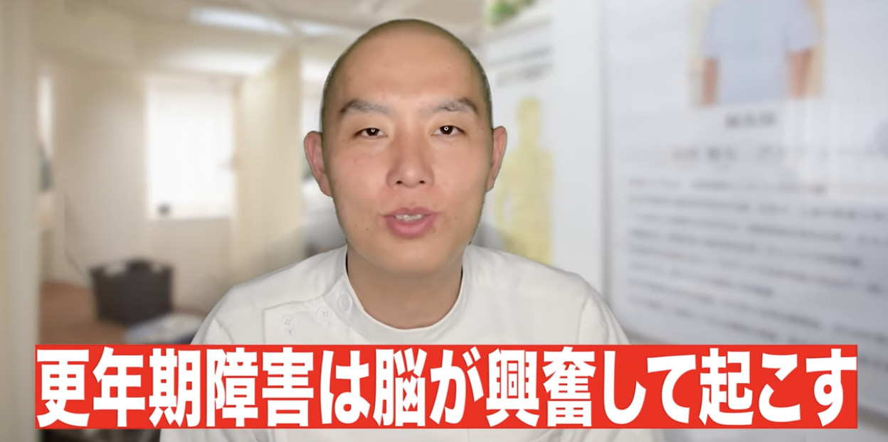
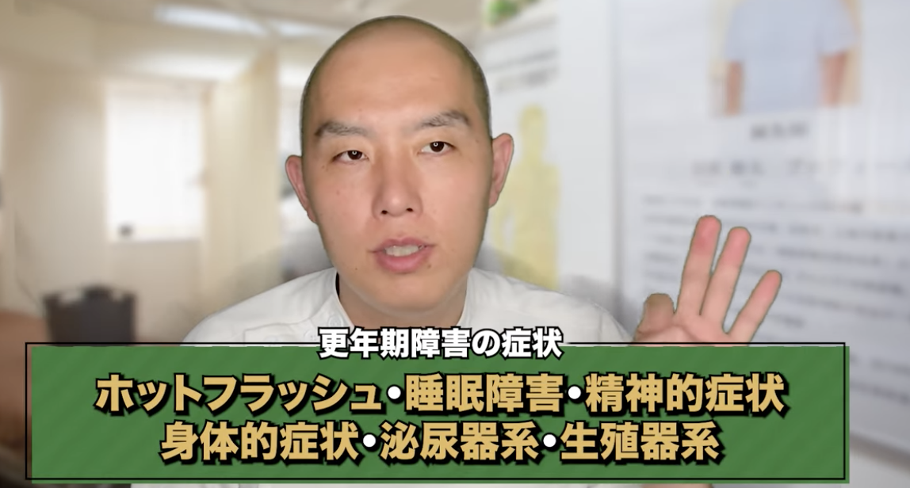
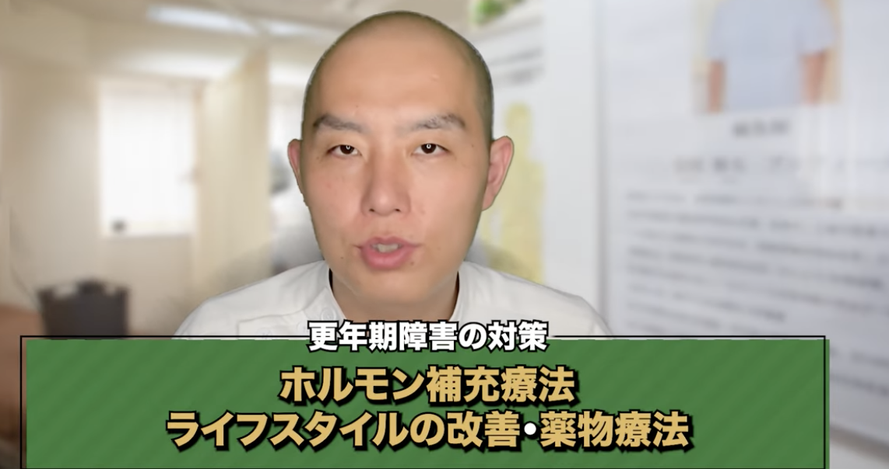
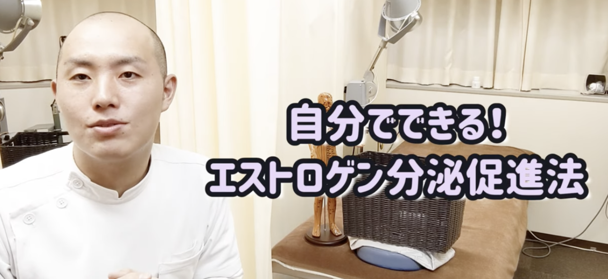

更年期障害の鍼灸
閉経前後のホルモン急減によるほてり・不眠・不安に対し、女性ホルモン関連のツボと七情に応じたお灸で心身を調える施術です。
院長YouTube解説・関連動画
更年期障害とは更年期に起きる色々な症状

女性は年齢に伴って思春期、性成熟期、更年期、老年期という４つのライフステージがあります。もちろん個人差はありますが、女性は50歳前後で閉経を迎えます。
更年期は、この閉経の時期の前後10年間です。一般的には45〜55歳前後だと言われています。年をとるにつれて、卵巣の機能は低下します。すると、女性ホルモンの分泌が急激に少なくなってしまいます。
ホルモンバランスの崩れによって体や心に対して色々な症状が現れることがあるのです。更年期に現れる症状の原因は女性ホルモンが減ることだけではありません。
加齢などの身体的なことや仕事や家庭の人間関係や性格などの心理的なことも複雑に関わっています。そのため、症状には大きな個人差があります。
更年期障害は、年齢を重ね自分の性ホルモン少なくなることによって、コレステロールが上がったりホットフラッシュという顔があつくなる症状が現れたり、体調不良が起きたりということが起こります。
更年期障害は女性に多いが男性にもある症状で、脳過敏症候群群と似ています。主に中年の女性が経験する身体的精神的な症状です。
閉経前後の数年間にエストロゲンというホルモンの減少が原因となり多くの女性が更年期障害に悩まされます。
更年期にはいろいろな症状が起きます。更年期症状は症状の中で他に病気がなく起きているもののことです。
更年期症状には軽いものから重いものまで様々な症状があり、個人差はあります。しかし、誰にでも起こります。
更年期症状の中で、重い症状があり、そのことが原因で仕事や家庭での生活など日常生活に支障が出ている場合に更年期障害と呼びます。
更年期障害の主な原因は女性ホルモンの減少

更年期障害の主な原因は閉経によって女性ホルモンが減っていくことです。卵巣機能の低下によるエストロゲンの急激な減少がホルモンの変動が体内の様々なシステムに影響を与え、様々な症状を引き起こすのです。
さらに、加齢などの身体的なことや育ってきた過程や性格などの心理的なこと、仕事や家庭の人間関係などの社会的なことが複合的に関わっていると考えられています。
更年期の女性は年で考えても、働き盛りの人や子育てをしている人、親の介護がある人などが多く、仕事や家庭のストレスが増える時でもあります。
更年期の体の変化に加えてストレスがあることによって更年期の症状が重くなることもあります。
更年期障害の原因は、閉経につれて起こる卵巣の機能の低下によって、女性ホルモンの分泌が一気に減ることです。
女性ホルモンは月経や妊娠といった女性機能や乳房や性器の成長、肌や髪を艶やかにするというような女性特有の体作りを促進するホルモンです。分泌が減ってしまうことによって今まで調節されてきた機能がきちんと働かなくなります。
女性ホルモンが少なくなると脳は卵巣にもっと女性ホルモンを出すように命令をします。しかし、命令をし続けていても卵巣の機能の低下によってホルモンを出すことができないという状態になります。
すると、脳がパニックを起こし自律神経のバランスが乱れ、体や心に色々な症状が現れるのです。
🎥 他のYouTube切り抜き・解説を読む（あと1件）▼
更年期障害発症の主な要因
1. エストロゲンの減少
閉経とホルモンの変動: 更年期に入ると、卵巣の機能が徐々に低下し、エストロゲンとプロゲステロンという2つの主要な性ホルモンの分泌が減少します。特にエストロゲンの減少が、更年期障害の多くの症状の主な原因とされています。
エストロゲンの役割: エストロゲンは、女性の生殖機能だけでなく、骨の健康、皮膚の弾力性、心血管系の健康、自律神経の調整など、体内のさまざまな機能に影響を与えています。そのため、エストロゲンが減少すると、これらの機能に影響が現れやすくなります。
2. ホルモンバランスの崩れ
プロゲステロンの減少: エストロゲンと同時に、プロゲステロンも減少します。このホルモンは、月経周期の調整や妊娠の維持に関与しています。プロゲステロンの減少は、月経不順や不安感の増加に関連しています。
黄体形成ホルモンと卵胞刺激ホルモンの増加: 閉経期に入ると、エストロゲンの低下に伴い、脳の視床下部と下垂体がLHとFSHの分泌を増やしますが、卵巣が反応しなくなるため、ホルモンのバランスが崩れます。これが更年期特有の症状を引き起こす一因となります。
3. 自律神経の乱れ
ホルモン変動による影響: エストロゲンは自律神経系にも影響を与えています。ホルモンの変動が自律神経のバランスを崩し、ほてり、発汗、動悸、不眠などの症状を引き起こすことがあります。
ストレスの影響: 更年期は、心理的なストレスや社会的な変化が重なる時期でもあります。これらのストレスが自律神経の乱れを助長し、症状を悪化させることがあります。
4. 加齢に伴う変化
代謝の低下: 年齢を重ねるにつれて、基礎代謝が低下し、体重が増えやすくなります。これがホルモンバランスの変化と相まって、更年期障害を悪化させることがあります。
骨密度の低下: エストロゲンは骨の健康を維持する役割を果たしていますが、その減少により骨密度が低下し、骨粗しょう症のリスクが高まります。
5. 遺伝的要因
家族歴: 更年期障害の症状やその重症度には遺伝的な要素が関与していることが研究で示されています。母親や姉妹が重い更年期症状を経験した場合、自身も同様の症状を経験する可能性が高くなると言われています。
6. ライフスタイル要因
食事や運動不足: 健康的な食事や定期的な運動は、ホルモンバランスを保ち、更年期症状を軽減する助けとなりますが、逆に不健康なライフスタイルは症状を悪化させる可能性があります。
喫煙やアルコール摂取: 喫煙はエストロゲンの代謝を早め、更年期障害の症状を悪化させることが知られています。また、アルコールの過剰摂取もホルモンバランスを乱す要因となります。

更年期障害はエストロゲンの減少によって起こります。エストロゲンの減少は脳の視床下部と下垂体に影響を与えます。これによって自律神経系が乱れて体温調整、睡眠のリズムに影響を与えるのです。
エストロゲンの低下は骨密度の低下や脂質代謝の変化を引き起こし、骨粗鬆症や心臓の血管疾患のリスクを高めます。
人間の体は全て脳が支配しています。脳から特定の臓器にこのホルモンを出しなさいという指令があるのです。エストロゲンのホルモンは、脳が卵巣に対してエストロゲンを出しなさいという指令を出し、卵巣から出てきます。
ただ、卵巣の機能が落ちてしまうとエストロゲンを出せなくなってしまいます。卵巣はエストロゲンを出したくても出せないが脳にはわからないため、脳がどんどん出せと興奮してしまうことで起こるのが更年期障害の症状です。
脳過敏症候群の発症の機序が脳が興奮して色々な症状を出すということと同じなのです。
更年期障害は簡単にいうと女性ホルモン現象による脳のパニックなのです。
視床下部から卵巣に向けて女性ホルモンを作るように指令を出しますが、卵巣の機能が年齢によって低下すると女性ホルモンが作れなくなり、脳が指令ばかり送るためにパニックを起こして自律神経の異常が起こるのです。
更年期障害の症状は様々

更年期障害の症状は人によって色々です。更年期は全身にさまざまな症状が出ます。
主な症状は、自律神経の乱れから起こる動悸や息切れやのぼせ、ほてり、発汗異常や肩こりなどがあります。他にも、頭痛や腰痛、手足のしびれ、イライラ感、めまい、耳鳴り、不安感、不眠、食欲不振などもよく見られる症状です。
皮膚や粘膜が乾燥したり、ドライマウスになったり、尿失禁をしたり、外陰部のかゆみが起こったりすることもあります。
・ホットフラッシュ
突然の顔の火照りや発汗
・睡眠障害
不眠や夜間の覚醒
・精神症状
イライラ、不安感、抑うつ
・身体的な症状
関節痛、筋肉痛、頭痛
・泌尿器系、生殖器系の症状
膀胱の問題、膣の乾燥
体のだるさが取れにくい、むず痒い、顔だけ火照る、などの症状がある場合は更年期障害の可能性があります。
更年期障害は女性の閉経前後5年以内に起きる症状で、ホットフラッシュやしびれ、異常な肩こりなどジャンルにとらわれない症状が起こります。
主に現れる症状は動悸や息切れ、ホットフラッシュ、ドライアイや発汗、寝汗、胃腸障害などで、自律神経失調症のような症状が現れます。
1. ホットフラッシュ
突然体温が上昇し、顔や上半身が急に熱く感じられる現象です。発汗や心拍数の増加も伴うことがあります。
2. 発汗
ホットフラッシュと関連して、特に夜間に大量の発汗が見られることがあります。これにより、睡眠が中断されることもあります。
3. 不眠
睡眠の質が低下し、入眠困難や夜間の覚醒が増えることがあります。夜間の発汗やホットフラッシュが原因となる場合も多いです。
4. 疲労感
身体的な疲労感や無気力感が続くことがあります。これはホルモンバランスの変化や睡眠障害によるものと考えられています。
5. 精神的症状
イライラや不安感、気分の落ち込みなどの精神的な変化が見られることがあります。更年期に伴うホルモン変動が原因とされています。
6. 動悸
心拍数が急に上がる、または心臓が激しく鼓動する感覚がすることがあります。これは自律神経のバランスが乱れることに起因します。
7. 関節や筋肉の痛み
関節や筋肉に痛みやこわばりを感じることがあります。エストロゲンの減少が原因とされています。
8. 乾燥した肌や髪
皮膚や髪が乾燥しやすくなり、かゆみや髪のパサつきを感じることがあります。
9. 膣の乾燥や性交痛
膣の粘膜が乾燥しやすくなり、性交時に痛みを感じることがあります。このため、性生活に対する興味が減少することもあります。
10. 尿失禁
咳やくしゃみ、笑った時などに尿が漏れやすくなることがあります。これは骨盤底筋の緩みやホルモンの変化による影響です。
11. 体重増加
代謝が低下することで体重が増えやすくなることがあります。また、脂肪の分布が変わり、お腹周りに脂肪がつきやすくなることもあります。
12. 骨密度の低下
エストロゲンの減少により、骨密度が低下し、骨粗しょう症のリスクが高まります。

更年期障害の改善方法には、少なくなってしまった女性ホルモンのエストロゲンを2種類のホルモン剤で補う方法があります。
特にほてりやのぼせ、発汗などの自律神経が原因の症状の改善や閉経した後の骨量が減ってしまわないための予防につながる効果が期待できます。
さらに、ホルモン剤は善玉コレステロールを増やしてくれるため脂質異常症の予防にも効果的です。
ホルモン剤以外にも、漢方薬を使用することもあります。漢方薬で血液やリンパの流れを整えることで体全体を整えることも効果的です。不安やイライラが強い場合は睡眠剤や安定剤を組み合わせて使うこともあります。
薬による改善と同時に食事や運動など生活習慣を改善することを心がけていきます。カウンセリングなども行って体と心のバランスを整えていくことが重要です。
・ホルモン補充
エストロゲンを補充することで症状を緩和する方法です。
副作用のリスクもあるため医師と相談しましょう。
・ライフスタイルの改善
ストレス管理、運動、睡眠も重要です。
よくシールを処方されますが、そのシールによって卵巣はエストロゲンを出していないですが、出しているように脳を誤魔化します。時間が経ってくると脳もどんどん落ち着いてきてシールを貼らなくても正常な状態でいられるようになります。
更年期障害が改善する食品は、大豆製品、青魚、ナッツ、緑黄色野菜です。
大豆製品・・・イソフラボンがエストロゲンのような作用で症状を緩和します。
青魚・・・E P A 、D H Aが豊富で心血管系の健康をサポートします。
ナッツや種子・・・ビタミンEと亜鉛がホルモンバランスを整える助けになります。
緑黄色野菜・・・ビタミンEやミネラルが豊富で全身の健康をサポートします。
薬を飲むことは悪いことではありません。薬を飲まないことで辛くなり、症状をどんどん悪化させている人も見受けられるため薬を飲んだりセルフケアをぜひして欲しいです。
最近、症状を和らげる方法のひとつとして、女性ホルモンに似た働きをする成分であるエクオールを摂取する方法が注目されています。
エクオールは大豆イソフラボンに含まれるダイゼインの代謝物で、女性ホルモンに似た働きをするといわれています。
エクオールを1日10㎎摂取することで、更年期症状の改善や骨粗しょう症の予防、女性のメタボ改善などに効果を発揮するということがわかっています。
1. 大豆製品
イソフラボン: 大豆や豆腐、納豆、豆乳などの大豆製品には、植物性エストロゲンと呼ばれるイソフラボンが豊富に含まれています。イソフラボンは、体内でエストロゲンに似た働きをし、ホットフラッシュなどの更年期症状の緩和に役立つことがあります。
2. 乳製品とカルシウムを多く含む食品
カルシウム: 閉経後、エストロゲンの減少により骨密度が低下しやすくなります。牛乳、ヨーグルト、チーズなどの乳製品はカルシウムが豊富で、骨を強化するのに役立ちます。
ビタミンD: カルシウムの吸収を助けるビタミンDも重要です。ビタミンDはサケやサバなどの脂肪の多い魚や、卵黄、シリアルなど強化された食品に含まれています。
3. 緑黄色野菜と葉物野菜
ビタミンKとカルシウム: ブロッコリー、ほうれん草、ケールなどの緑黄色野菜や葉物野菜は、カルシウムやビタミンKを多く含み、骨の健康をサポートします。ビタミンKはカルシウムの骨への取り込みを助ける役割があります。
抗酸化物質: これらの野菜には、細胞を保護し、老化を遅らせる抗酸化物質も豊富に含まれています。
4. 脂肪の多い魚（オメガ-3脂肪酸）
オメガ-3脂肪酸: サーモン、マグロ、イワシなどの脂肪の多い魚には、オメガ-3脂肪酸が豊富に含まれています。オメガ-3脂肪酸は、心血管系の健康をサポートし、炎症を抑え、精神的な安定にも寄与するとされています。
心血管の健康: 更年期には心血管系のリスクが高まるため、オメガ-3脂肪酸を含む魚を摂取することは心臓の健康維持に役立ちます。
5. ナッツ類と種子類
ビタミンE: アーモンド、ひまわりの種、ヘーゼルナッツなどのナッツ類や種子類には、ビタミンEが豊富に含まれています。ビタミンEは、抗酸化作用があり、皮膚の健康を維持し、更年期のホットフラッシュの軽減にも役立つことがあります。
マグネシウムと亜鉛: マグネシウムは筋肉の緊張を緩和し、睡眠の質を向上させるのに役立ちます。亜鉛は免疫機能のサポートや皮膚の健康に関与しています。
6. 全粒穀物
食物繊維: オートミール、玄米、全粒パンなどの全粒穀物には、食物繊維が豊富に含まれており、消化を助け、血糖値のコントロールをサポートします。
ビタミンB群: 全粒穀物はビタミンB群の供給源でもあり、エネルギー代謝や神経機能の維持に重要な役割を果たします。
7. フルーツ
ビタミンC: オレンジ、イチゴ、キウイなどのフルーツには、ビタミンCが豊富に含まれており、免疫機能をサポートし、皮膚の健康維持に役立ちます。
抗酸化作用: ブルーベリー、ラズベリーなどのベリー類は、強力な抗酸化物質を含み、老化のプロセスを遅らせる効果があります。
8. ハーブティー
リラクゼーション: カモミールやラベンダー、ペパーミントなどのハーブティーは、リラクゼーション効果があり、不眠やストレスの軽減に役立ちます。
ホットフラッシュの軽減:セージなどの一部のハーブティーは、ホットフラッシュの頻度や強度を軽減する効果があるとされています。
・SSRI/SNRI（抗うつ薬）
代表的な薬:エフエックス、パキシル、プロザック
効果:抗うつ薬であるSSRIやSNRIは、ホットフラッシュや気分の変動、不安感などの更年期症状を緩和します。特にホットフラッシュの頻度や強度を減少させる効果が期待できます。
副作用:口の渇き、吐き気、便秘、疲労感、性欲減退、体重増加、睡眠障害、時に若年層の自殺念慮。
・ガバペンチン（抗てんかん薬）
代表的な薬:ガバペン、ニューロンチン
効果:ホットフラッシュの軽減に効果があります。睡眠障害の改善にも役立つことがあります。
副作用:めまい、眠気、体重増加、疲労感、むくみ、気分変動。
・ クロニジン（血圧降下薬）
代表的な薬:カタプレス
効果:血圧を下げる作用があり、ホットフラッシュの症状を軽減することができます。
副作用:口の渇き、便秘、めまい、疲労感、眠気、頭痛。
・バゼドキシフェン
代表的な薬:デュアビブ
効果:骨密度の低下を防ぎ、骨粗しょう症のリスクを低減します。エストロゲン受容体に作用し、ホットフラッシュを軽減する効果もあります。
副作用:血栓症、筋肉痛、めまい、吐き気、心血管系リスクの増加。
・エストロゲンクリーム/リング
代表的な薬:プレミナリング、オーブスリング
効果:膣の乾燥、痛み、性交痛を緩和し、膣の健康を維持します。全身への影響が少ないため、ホットフラッシュの治療には適しませんが、局所的な症状に効果があります。
副作用:局所の炎症、かゆみ、出血、乳がんリスク。
女性ホルモン分泌促進法

更年期障害の改善方法はホルモン補充療法です。さらに、お灸で卵巣に刺激を与えて女性ホルモンの分泌を促すことも改善方法の１つです。この方法は厳密には女性ホルモン分泌促進法といい、特定のツボに鍼をして女性ホルモンを促すアプローチです。
自分で女性ホルモンの分泌を促す方法はツボを押すことです。
女性ホルモンの揺らぎが全身の自律神経症状を引き起こす仕組み
閉経前後のホルモン分泌が急変動すると、脳の視床下部が体温調節や血管運動・心拍・感情のコントロールを乱しやすくなり、のぼせ・冷え・めまい・肩こり・倦怠感が複合的に現れます。
銀座そうぜん鍼灸院では、三陰交・太衝・神門・背部の自律神経調整穴を用い、下半身の冷えと上半身のほてり（冷えのぼせ）を整えながら、婦人科治療（HRT・漢方等）との併用にも柔軟に対応します。
更年期障害に用いられる代表的なツボとセルフケア

📌 詳細データ・ツボ一覧表を開く▼
| ツボ名（経穴） | 位置の目安 | 主な狙い・役割 | セルフケアの注意点 |
|---|---|---|---|
| 三陰交（さんいんこう） | 内くるぶし頂点から指4本分上、すね骨の際 | 婦人科の要穴。月経痛・冷え・更年期・PMSケア | 妊娠中（初期〜中期）の強刺激・灸は禁忌 |
| 血海（けっかい） | 膝のお皿の内側上端から指3本分上 | 骨盤内血流（瘀血）改善・月経痛・のぼせケア | 親指でゆっくり5秒圧迫。妊娠中は強刺激回避 |
| 気海（きかい） | おへそから指2本分（1.5寸）下 | 気力低下・下腹部の冷え・月経不順の補益 | 温灸・保温が安全。妊娠中の下腹部直接刺激は禁忌 |
| 太衝（たいしょう） | 足の甲、親指と人差し指の骨が交わる手前 | PMSのイライラ・のぼせ・ストレス緩和 | 妊娠中は刺激を避ける（降気作用が強いため） |
| 合谷（ごうこく） | 手の甲、親指と人差し指の骨が交わる手前 | 鎮痛・自律神経調整・ホットフラッシュ頭痛ケア | 妊娠中は古典的禁忌穴のため強刺激回避 |
| 内関（ないかん） | 手首内側横ジワから肘側へ指3本分、2腱の間 | 更年期の動悸・不安・PMSの気分の波・つわりケア | 比較的安全性が高いが強圧は避け穏やかに |
日常で心がけたいセルフケアと避けたいNG行動
✓ おすすめのセルフケア
- 足首（三陰交）やお腹・仙骨まわりを温め、上半身ののぼせとの温度差を縮める
- 脱ぎ着しやすい服装と、ほてり時のゆっくりした腹式呼吸
- タンパク質・大豆製品・鉄分を意識した食事と軽いウォーキング
✕ 悪化しやすいNG行動
- 我慢して我慢し続ける（婦人科での血液検査・甲状腺疾患の除外も大切）
- 過度なカフェイン・アルコール・辛い刺激物の摂りすぎ（ホットフラッシュ誘発）
- 強い肩もみや睡眠不足の放置
査読論文が示す「女性特有の体調ケア（月経困難症・更年期症状・PMS・不妊補完）×鍼灸」の科学的エビデンス
国際的な医学データベース（PubMed・Cochrane等）で報告されている女性特有の体調ケア（月経困難症・更年期症状・PMS・不妊補完）領域の代表的な査読済み鍼灸研究です（標準治療との併用や研究上の限界を含めて掲載しています）。
📚 査読論文データ・出典表を開く▼
| 年・研究デザイン | 対象・規模 | 主な結果と臨床的意義 | 限界・出典 |
|---|---|---|---|
| 2016年 Cochraneレビュー | 原発性月経困難症 42 RCTs（n=4,640） | NSAIDs比較で疼痛緩和率（OR 4.99）・有害事象減少（OR 0.10）を示唆。シャム比較は一貫せず。 | エビデンス確実性は低〜非常に低。鎮痛薬の補完として位置づけ。 Cochrane (PMID: 27087494) |
| 2013年 Cochraneレビュー | 更年期ホットフラッシュ 16 RCTs（n=1,155） | 無治療比で頻度（SMD -0.50）・重症度（SMD -0.54）を中等度改善、シャム比でも重症度小幅改善。 | ホルモン補充療法（HT）より効果小。HT不適応時の補完選択肢。 Cochrane (PMID: 23897589) |
| 2018年 Cochraneレビュー | PMS・PMDD 5 RCTs（n=277） | シャム比較で気分・身体症状・QOL改善を示唆、有害事象の群間差なし。 | 小規模・試験数少（GRADE低〜非常に低）。 Cochrane (PMID: 30105749) |
| 2018年 大規模多施設RCT | 体外受精（IVF）848名（豪州・NZ 16施設） | 胚移植前後の短期3回鍼 vs シャムで生児出生率18.3% vs 17.8%（RR 1.02）と有意差なし。 | 出生率向上の直接根拠は未確立。ストレス・冷えの補完ケアとして説明。 JAMA (PMID: 29800212) |
医療機関の受診を最優先すべきサイン（レッドフラッグ）
⚠ 専門医の受診・検査を最優先してください
閉経後の不正出血や繰り返す不正出血、妊娠可能性がある状況での激しい下腹部痛・出血・めまい（異所性妊娠疑い）、突然の耐えがたい下腹部激痛・嘔吐（卵巣茎捻転等）、年々悪化する月経痛や重度貧血サイン、発熱を伴う悪臭帯下がある場合は直ちに産婦人科を受診してください。
参考文献・出典
- 銀座そうぜん鍼灸院「更年期障害の公式解説ページ」
- 2016年 Cochraneレビュー（原発性月経困難症 42 RCTs（n=4,640））— Cochrane (PMID: 27087494)
- 2013年 Cochraneレビュー（更年期ホットフラッシュ 16 RCTs（n=1,155））— Cochrane (PMID: 23897589)
- 2018年 Cochraneレビュー（PMS・PMDD 5 RCTs（n=277））— Cochrane (PMID: 30105749)
- 2018年 大規模多施設RCT（体外受精（IVF）848名（豪州・NZ 16施設））— JAMA (PMID: 29800212)
よくある質問（FAQ）
Q. 婦人科でホルモン補充療法を受けていますが併用できますか？▼
Q. 自宅でお灸のセルフケアもできますか？▼
あわせて読まれる関連疾患（女性のお悩み）
子宮内膜増殖症は異型・悪性化リスクの婦人科評価が必須です。専門治療を最優先とし、主治医許可下で自律神経と血流を整える補助ケアを行います。
外陰部〜肛門周囲に強い痒みが生じる症状です。医療機関での原因特定を優先し、ツボ刺激と保湿養生で再発を防ぎます。
外陰部に痒みや痛み、赤みが生じる炎症です。医療機関での原因鑑別と治療を優先し、ツボケアで巡りと免疫を支えます。
細菌感染による卵管の炎症で、急性期は抗菌薬治療が必須です。治療後の回復期にツボ刺激で下腹部の巡りを整えます。
排卵後の黄体ホルモン分泌が不足し子宮内膜が整いにくい状態です。婦人科治療と併用し、ツボ刺激で血流を支えます。
子宮の発育が未熟で月経や妊娠に影響が出やすい状態です。婦人科治療と併用し、骨盤内血流と自律神経を整えます。
おひとりで悩まず、まずはご相談ください
銀座本院・川口・大宮・横浜・博多・田無の各院でご予約を承っております。